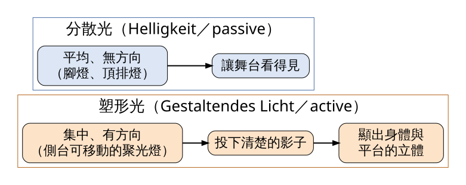
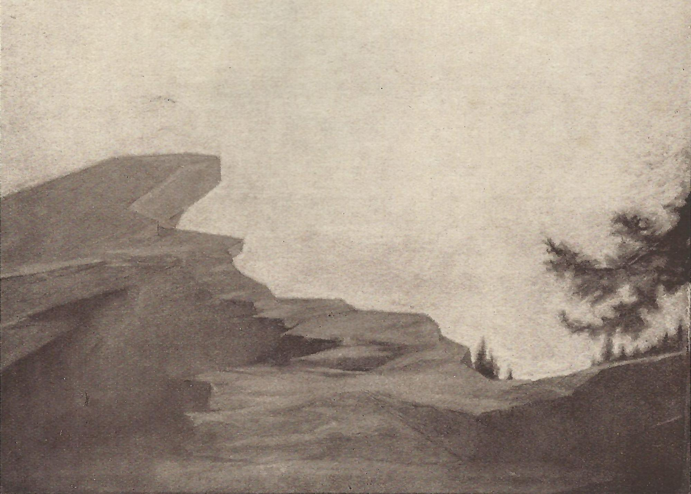
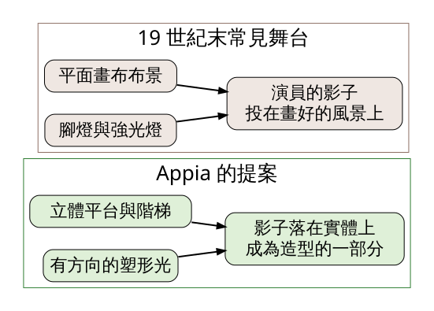
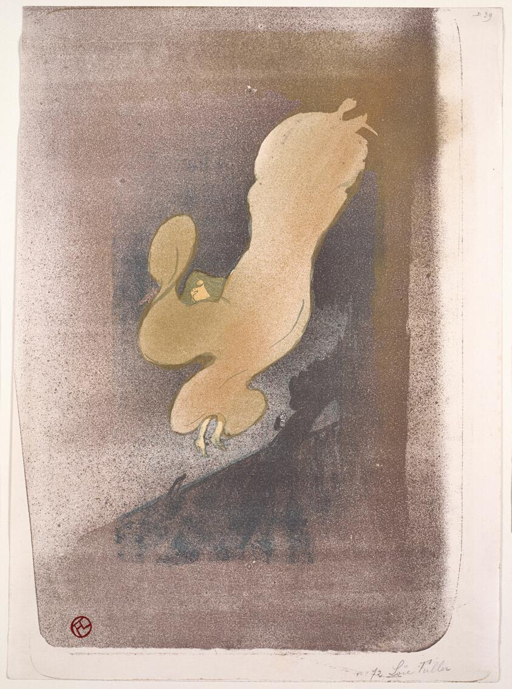

Adolphe Appia 在 1899 年把舞台上的光分成兩種：一種只負責讓人看得見，另一種有方向、會投下影子，能把演員的身體和空間「塑」出來。學會分辨這兩種光，你就能說出一個舞台、一個房間為什麼看起來平，或為什麼看起來有厚度。
史料（依二手文獻：Drawing Matter〈Adolphe Appia: ‘Luminous – Very Luminous’〉；Palmer 2015）
1894 年 11 月，英國作家 Houston Stewart Chamberlain 替一位瑞士年輕人寫信給 Cosima Wagner，也就是華格納的遺孀、拜魯特音樂節的掌門人。這位年輕人叫 Adolphe Appia，三十出頭，學音樂出身，手上有一疊替華格納歌劇畫的舞台設計。Cosima 沒有回應他見面的請求，後來還把他畫的《萊茵的黃金》場景比作極地的冰原。
Appia 原本用法文寫了一本書，談音樂與舞台該怎麼配合，找不到法國出版社，只好改寫成德文。1899 年，這本《Die Musik und die Inscenierung》（音樂與舞台調度）由慕尼黑的 Bruckmann 出版，那年他 37 歲。書裡最常被後人引用的部分，講的是燈。
當時歐洲劇院的舞台大多還點著煤氣燈：台口一排腳燈，頭頂一排排燈條，把畫在布上的森林、宮殿照亮。Palmer 指出，Appia 在 1886 到 1890 年住在德勒斯登時，看過劇院裡用石灰光燈和碳弧燈打出的強光束。這種光很亮，問題也很明顯：演員一走近背景布，自己的影子就印在畫好的天空上，畫出來的遠景立刻露餡（見圖 3）。
經典理論：Appia《Die Musik und die Inscenierung》，1899（德文原典未取得，依二手文獻：Palmer 2015；Drawing Matter 文章）
Appia 主張舞台上的光有兩種工作（見圖 1）。
分散光：德文作 Helligkeit，Palmer 譯為「被動的光」。它來自腳燈、頂排燈這類固定燈具，均勻、沒有明確方向，任務是讓舞台亮到看得見。
塑形光：德文作 Gestaltendes Licht，Palmer 譯為「主動的光」。它集中、有方向，會投下輪廓清楚的影子。Appia 心中的例子是月光、火把，以及當時從側台用手持的可移動聚光燈打出的光。有了影子，觀眾才看得出身體的凹凸、平台的高低。

圖 1｜Appia 區分的兩種舞台光。來源：本課程依 Appia《Die Musik und die Inscenierung》（1899）及 Palmer（2015）的整理繪製。
為什麼要這樣分？Appia 的出發點是演員的身體。身體是立體的、會動的；畫布布景是平的、不動的。用一片均勻的光同時照亮兩者，平面的畫會把立體的人也壓平。他因此想拿掉畫布，換成真正有高低的平台和階梯，再用塑形光讓影子落在這些實體上。影子從麻煩變成了材料。
Palmer 整理 Appia 的寫作後指出，Appia 認為光的表現力來自四項可控制的性質：光束的大小與形狀、強度、顏色，以及最關鍵的方向。他也主張光應該像音樂一樣隨時間調節。Appia 在 1895 與 1897 年寫的華格納歌劇分場說明裡，逐場寫下光該怎麼變，Palmer 把它們稱為最早的「燈光總譜」。
後來研究 Appia 的 Denis 與 Marie-Louise Bablet 在 1982 年出版的專書，書名就用「演員—空間—光」三個詞來概括他的思路：演員在前，空間為演員的身體服務，光讓兩者活起來。

圖 2｜Appia 於 1892 年為華格納《女武神》所作的舞台設計，由尼永（Nyon）借展至 1927 年馬格德堡德國戲劇展覽時拍攝。來源：Adolphe Appia（設計），Rudolf Hatzold（攝影），刊於《Die Deutsche Theater-Ausstellung Magdeburg 1927》，1928。授權：Public domain，來源頁面
看圖 2 時，先別管畫的是哪一幕。找找光從哪個方向來，哪些面亮、哪些面落進陰影，再想像一個演員站進這個場景，他的影子會落在哪裡。這張圖比《Die Musik und die Inscenierung》出版還早七年，Appia 的光線想法在畫紙上已經成形。

圖 3｜同樣會出現影子，舊舞台與 Appia 的處理方式不同。來源：本課程依 Palmer（2015）對 19 世紀末舞台照明與 Appia「主動光」的說明繪製。
史料（依二手文獻：King's College London THEATRON 計畫 Hellerau 頁面；Beacham 1985《New Theatre Quarterly》；Prague Quadrennial 2019 重建計畫頁面）
1906 年 5 月，Appia 在日內瓦音樂院聽了 Émile Jaques-Dalcroze 介紹「律動教學法」（Eurhythmics）的講座，一種讓學生用全身動作去感受節奏的訓練。兩人從此合作。1909 年，Appia 畫了約 30 張他稱為「律動空間」的素描寄給 Dalcroze：只有方塊、平台、階梯和光。
機會出現在德勒斯登郊外的花園城市 Hellerau。Dalcroze 在那裡設立學院，1911 年落成的節慶劇場有一個大廳，沒有鏡框式台口，舞台和觀眾席在同一個空間裡。燈光系統由畫家 Alexander von Salzmann 構想：大廳牆面與天花板蒙上白色布幕，數千顆燈泡藏在布後，整個房間從內部均勻地發亮，幾乎不產生影子。燈泡數量各來源說法不一，2017 年重建計畫的頁面寫約 5,000 顆。
1912 年夏天，學院辦了三週的節慶，最後的節目包含 Gluck 歌劇《奧菲歐與尤麗狄絲》中奧菲歐下到冥府的一場。1913 年夏天，學院演出了整部歌劇，分三輪，每輪兩天。THEATRON 頁面整理的紀錄提到，1912 年有超過 4,000 人到場，1913 年約 5,000 人，來客包括 George Bernard Shaw、Max Reinhardt、Sergei Diaghilev、Paul Claudel、Rachmaninoff。舞台上沒有畫好的布景和道具，取而代之的是平台、階梯這類建築性的結構。
拿今天的理論來拆這個舞台，可以看到 Appia 兩種光的分工換了一種做法。
分散光變成建築本身。過去的分散光靠腳燈從前方照，演員背後的布景會被照出影子。Hellerau 讓整面牆、整片天花板一起發光，光沒有單一方向，舞台上的人像是站在一團亮的空氣裡。這個房間的基礎亮度不再是「從某處照過來」的。
平台和階梯接住影子。Beacham 的文章引了一封 1960 年的信，形容 Appia 在 Hellerau 的設計只用階梯、高低層次和光。演員站上不同高度的台階，身體的輪廓由台階的明暗襯出來。觀眾看到的立體感來自真實的高低差，不是畫出來的透視。
光改變了材質的樣子。Beacham 文中引用了哲學家 Martin Buber 的觀感：在這種光底下，同一個材質一下子看起來柔軟、一下子堅硬，一下子扁平、一下子渾圓。Buber 把它稱作「創造性的光」。
回到 Appia 的出發點：他要光替身體服務。在 Hellerau，身體站在會變化的光裡，踩在實體的台階上，觀眾從身體和平台之間的明暗讀出空間。
史料（Fuller 美國專利 US 513,102，1894；依二手文獻：Wikipedia「Loie Fuller」條目所引資料）
和 Appia 同年出生（1862）、同年過世（1928）的美國舞者 Loie Fuller，從舞蹈這一側走到了光。她在 1892 年於紐約推出〈蛇舞〉（Serpentine Dance），同年底登上巴黎 Folies Bergère。她穿著極寬大的絲綢裙，用手臂揮動布料，讓布在空中翻成花瓣、火焰、波浪的形狀，彩色的燈光打在布上。據記載，她把彩色濾片裝在可轉動的燈上，表演中隨時換色。
1893 年 10 月，她申請了一項美國專利，1894 年 1 月 23 日核准（US 513,102），名稱是〈製造舞台效果的機構〉。專利說明裡，舞台地板嵌入玻璃板，燈從下方往上打，舞者淺色的衣裙被照亮，看起來像懸在半空。
Toulouse-Lautrec 1893 年的彩色石版畫《Miss Loïe Fuller》（見圖 4）幾乎看不到人，只有一團被光染色、往上翻騰的布，舞者的頭小小地藏在裡面。

圖 4｜Henri de Toulouse-Lautrec，《Miss Loïe Fuller》，1893，彩色石版畫。來源：Art Institute of Chicago，The Joseph Brooks Fair Collection。授權：Public domain（CC0），來源頁面
把 Fuller 和 Appia 放在一起，差別很清楚。Fuller 用光把身體藏進布料，觀眾看的是光和布的變化；Appia 用光把身體的立體顯出來。兩人都讓光隨時間變化，都把燈從背景工具變成表演的一部分，方向卻相反。下次看舞蹈演出，可以問自己：這一段的燈是在藏身體，還是在顯身體？
誤解一：「主動的光」就是會移動的光。Palmer（2015）指出，英文教科書和燈光手冊常把 Appia 的 active light 解讀成「移動的光」或「動態燈光」。Appia 用的法文詞 rampe mobile，指的是當時可以從側台手持、隨處架設的聚光燈，相對於固定在台口和頭頂、接著煤氣管的燈具。「可移動」說的是燈具的位置，重點在它能打出有方向、有影子的光。（史料：Palmer 2015 對 Appia 法文用詞的考證）
誤解二：Appia 的燈光革命是電燈帶來的。許多評論把 Appia 的想法連到 1880 年代開始進入劇院的白熾電燈。Palmer 反駁這個說法：電燈剛進劇院時多半只是取代煤氣腳燈和燈條，照出來的仍是平的光，打在布景上的影子反而更明顯。他認為 Appia 的靈感來自更早的石灰光燈和碳弧燈，以及他在德勒斯登親眼看到的劇院實務。（史料：Palmer 2015 的反駁論點）
誤解三：Hellerau 的光都是 Appia 一個人做的。Hellerau 大廳那套藏在布幕後的燈光系統由 Alexander von Salzmann 構想，Salzmann 在 1913 年的節目冊中寫過專文談這套光。Appia 提供了舞台設計與理論方向，實際的空間是 Dalcroze、Salzmann 和建築團隊一起完成的。（史料：Beacham 1985；Prague Quadrennial 2019 頁面）
看（5 分鐘）
晚上回家後，只開房間的大燈，看一個桌上的物品，例如馬克杯或一顆橘子。再關掉大燈，只開一盞檯燈或走廊的燈。兩種情況下，物品的影子在哪裡？輪廓清楚還是模糊？哪一次你比較能感覺到它是圓的？
做（10 分鐘）
準備：手機（手電筒和相機）、一張白色 A4 紙或一件薄的白 T 恤、同一個桌上物品。
回顧（5 分鐘）
來源 | 類型 | 查核日期 |
Scott Palmer (2015), A ‘choréographie’ of light and space: Adolphe Appia and the first scenographic turn, Theatre and Performance Design 1(1-2): 31–47。White Rose 典藏頁面｜DOI | 史料（學術論文） | 2026-11-20 |
Drawing Matter, Adolphe Appia: ‘Luminous – Very Luminous’（Appia 生平、1899 年出版經過、兩種光的德文用語）。連結 | 史料（二手） | 2026-11-20 |
Richard C. Beacham (1985), Appia, Jaques-Dalcroze, and Hellerau, Part Two: ‘Poetry in Motion’, New Theatre Quarterly 1(3)。連結 | 史料（二手） | 2026-11-20 |
King's College London THEATRON 計畫，Hellerau 節慶頁面（1912、1913 節慶與來客）。連結 | 史料（二手） | 2026-11-20 |
Prague Quadrennial 2019，Reconstruction of the Future（Salzmann 光室與 Appia 1912 舞台的 2017 年重建）。連結 | 史料（二手） | 2026-11-20 |
Wikipedia「Festspielhaus Hellerau」條目（1911 年落成、無鏡框台口；引 Brockett《History of the Theatre》）。連結 | 史料（二手，僅作索引） | 2026-11-20 |
Wikipedia「Adolphe Appia」條目（生卒年、著作出版地；書目含 Bablet 1982《Adolphe Appia 1862–1928: Actor – Space – Light》）。連結 | 史料（二手，僅作索引） | 2026-11-20 |
Marie Louise Fuller, US Patent 513,102, Mechanism for the Production of Stage Effects，1893 年 10 月 12 日申請，1894 年 1 月 23 日核准。連結 | 史料（原始文件） | 2026-11-20 |
Wikipedia「Loie Fuller」條目（生卒年、〈蛇舞〉、彩色濾片與轉動燈具）。連結 | 史料（二手） | 2026-11-20 |
圖 2 授權頁面：Wikimedia Commons, Adolphe Appia, 1892 Wallküre Richard Wagner Nyon。連結 | 圖片授權（Public domain） | 2026-11-20 |
圖 4 授權頁面：Art Institute of Chicago, Toulouse-Lautrec, Miss Loïe Fuller, 1893。連結 | 圖片授權（Public domain／CC0） | 2026-11-20 |
延伸閱讀：Richard C. Beacham 編譯《Adolphe Appia: Texts on Theatre》（Routledge, 1993），收錄 Appia 主要文章的英譯。